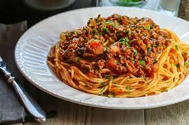

Spaghetti Bolognese
Spaghetti Bolognese

Ingredients
- 1 pound spaghetti
- 2 tablespoons olive oil
- 1 onion, chopped
- 2 cloves garlic, minced
- 1 pound ground beef
- 1 can (14 ounces) diced tomatoes
- 1 tablespoon tomato paste
- 1 teaspoon dried basil
- 1 teaspoon dried oregano
- 1/2 teaspoon sugar
- Salt and pepper, to taste
- Parmesan cheese, for serving
Instructions
- Cook spaghetti according to package directions. Drain and set aside.
- In a large saucepan, heat olive oil over medium heat. Add onion and garlic and cook until softened, about 5 minutes.
- Add ground beef and cook until browned, about 5 minutes. Drain excess fat.
- Stir in diced tomatoes, tomato paste, basil, oregano, and sugar. Season with salt and pepper.
- Bring to a simmer and let cook for 10 minutes.
- Serve spaghetti topped with Bolognese sauce and sprinkle with Parmesan cheese.